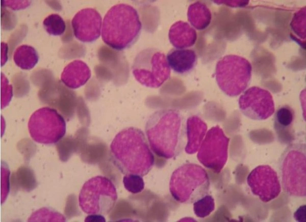

BONE MARROW → THYMUS
Marrow-derived precursor
An early precursor travels to the thymus, the organ where T-cell development takes place.
Coordinate. Target. Keep the balance.
T cells begin with marrow-derived precursors and mature in the thymus. Their receptors recognize antigen fragments presented by other cells.
Choose a stage to see what changes.

An early precursor travels to the thymus, the organ where T-cell development takes place.
The cell develops its receptor and passes selection steps that help it recognize the body’s presentation machinery while limiting harmful self-reactivity.
The cell leaves the thymus prepared to respond, but it still needs appropriate activation signals.
Matching antigen and other signals trigger expansion and specialized functions. Different T-cell subsets have different jobs.
Many effector cells disappear when the response subsides; some T cells persist as memory cells.
Simplified teaching pathway. Development and antigen-driven activation are different processes. Photographs are representative examples as captioned, not a time-lapse maturation sequence. A routine smear alone does not establish lymphocyte subtype.
Coordinate responses and help B cells and other immune cells.
Recognize and kill selected infected or abnormal cells.
Help restrain immune responses and maintain tolerance to self.